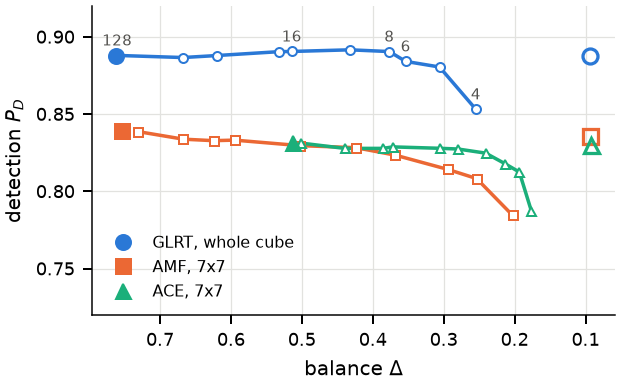

1{{Affiliation / Lab name, University}}
{{Venue, Year}}

{{Abstract copied from the paper.}}
{{2–3 accessible paragraphs summarizing the main idea. Add figures with <figure class="teaser"> blocks as needed.}}
{{Key results, main figure or table as an image.}}
@article{ {{citekey}},
title = { {{PAPER TITLE}} },
author = { {{Author One and Author Two}} },
journal = { {{Venue}} },
year = { {{Year}} }
}